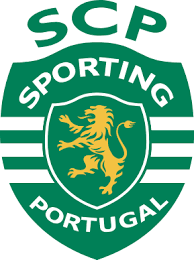
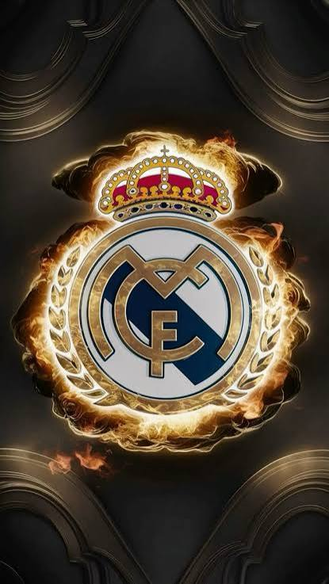
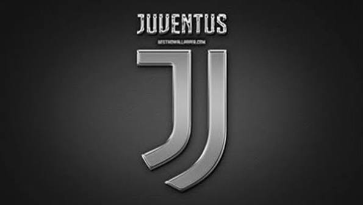

Sporting CP 🇵🇹بدأ كريستيانو مسيرته الاحترافية مع سبورتينغ لشبونة في البرتغال، وشارك مع الفريق الأول وهو صغير، ولفت الأنظار بمهاراته وسرعته وقدرته على تسجيل الأهداف، قبل انتقاله لمانشستر يونايتد عام 2003، وده كان بداية رحلته العالمية. تحب اللي بعدها يبقى
كريستيانو رونالدو لعب مع مانشستر يونايتد على فترتين، وحقق مع النادي عدة بطولات أبرزها دوري أبطال أوروبا، وثلاثة ألقاب في الدوري الإنجليزي الممتاز، وكأس الاتحاد الإنجليزي، وكأس رابطة الأندية الإنجليزية. كمان أصبح من أبرز نجوم الفريق وسجل العديد من الأهداف الحاسمة.

Real Madrid 🇪🇸مع ريال مدريد، حقق كريستيانو رونالدو أربع ألقاب دوري أبطال أوروبا، وثلاث ألقاب دوري إسباني، وإثنين كأس ملك إسبانيا، وثلاث ألقاب كأس العالم للأندية، وأصبح الهداف التاريخي للنادي

Juventusانتقل كريستيانو رونالدو إلى يوفنتوس الإيطالي عام 2018 قادمًا من ريال مدريد. حقق مع الفريق الدوري الإيطالي مرتين وكأس إيطاليا مرة واحدة، وكان من أبرز لاعبي الفريق وسجل العديد من الأهداف خلال فترة لعبه مع النادي.
انتقل كريستيانو رونالدو إلى نادي النصر السعودي في ديسمبر2022، وواصل تسجيل الأهداف وصناعة اللقطات المميزة. أصبح من أبرز نجوم الدوري السعودي. وساهم بخبرته وشخصيته القيادية في زيادة الاهتمام العالمي بكرة القدم السعودية